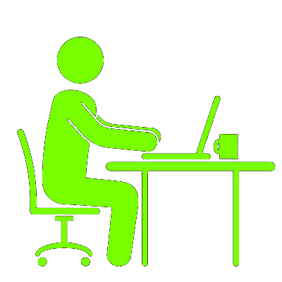

DESCONECTE-SE.
De acordo com um estudo de 2006, 1 em 8 pessoas sofrem de Vício em Internet.
Mas o que é o Vício em Internet?
O vício em internet é descrito como uma desordem de controle de impulsos, que não envolve drogas intoxicantes e é similar ao vício em jogos de azar. O paciente do transtorno acaba criando uma dependência emocional às atividades exercidas online, seja por dificuldade de exercer atividades sociais na vida real, por usar as mesmas como uma forma de escapismo para problemas externos, ou qualquer outro motivo.
Indícios de Vício em Internet
Alguns indícios de vício em internet são: